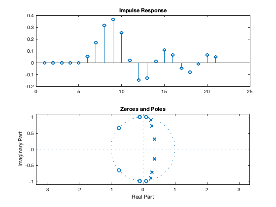

Contents
1. 3rd Order Elliptic Filter.
We use ellip function to generate parameters for the desired third order filter
dp = 0.01; ds = 0.01; Rp = -20*log10(1-dp); Rs = -20*log10(dp); [B, A] = ellip(3, Rp, Rs,0.4); % H(z) = (0.1256 + 0.3021z^-1 + 0.3021z^-2 + 0.1256z^-3) / (1 - 0.6303z^-1 + 0.6550z^-2 - 0.1693z^-3) % We plot frequency response using freqz function, both in linear and dB % scale. [H, w] = freqz(B,A); subplot(2,1,1), plot(w, abs(H)), title('Freq. Resp. Linear'); subplot(2,1,2), plot(w, mag2db(abs(H))), title('Freq. Resp. dB');
Zeros and Poles
We also plot the impulse response and the poles and zeroes of the system.
n = -5:15; hx = filter(B,A,(n==0)); subplot(2,1,1), stem(hx), title('Impulse Response'); subplot(2,1,2), zplane(B,A), title('Zeroes and Poles');
2.
Same as above, but this time using a 4th order elliptic filter.
dp = 0.01; ds = 0.01; Rp = -20*log10(1-dp); Rs = -20*log10(dp); [B, A] = ellip(4, Rp, Rs,0.4);
We plot frequency response using freqz function, both in linear and dB scale.
[H, w] = freqz(B,A); subplot(2,1,1), plot(w, abs(H)), title('Freq. Resp. Linear'); subplot(2,1,2), plot(w, mag2db(abs(H))), title('Freq. Resp. dB');
We also plot the impulse response and the poles and zeroes of the system.
n = -5:15; hx = filter(B,A,(n==0)); subplot(2,1,1), stem(hx), title('Impulse Response'); subplot(2,1,2), zplane(B,A), title('Zeroes and Poles');
3.
As above, but using a 6th order elliptic filter.
dp = 0.01; ds = 0.01; Rp = -20*log10(1-dp); Rs = -20*log10(dp); [B, A] = ellip(6, Rp, Rs,0.4); % We plot frequency response using freqz function, both in linear and dB % scale. [H, w] = freqz(B,A); subplot(2,1,1), plot(w, abs(H)), title('Freq. Resp. Linear'); subplot(2,1,2), plot(w, mag2db(abs(H))), title('Freq. Resp. dB');
We also plot the impulse response and the poles and zeroes of the system.
n = -5:15; hx = filter(B,A,(n==0)); subplot(2,1,1), stem(hx), title('Impulse Response'); subplot(2,1,2), zplane(B,A), title('Zeroes and Poles'); % Overall, we observe that increasing the order of the elliptic filter % reduces the transition window between the passband and stopband. Though % the ripples in the stopband and passband are kept the same, increasing % the order of the elliptic filter made the filter behave more closely to % an ideal filter, more quickly attenuating the signal as the frequency % passes the passband threshold.